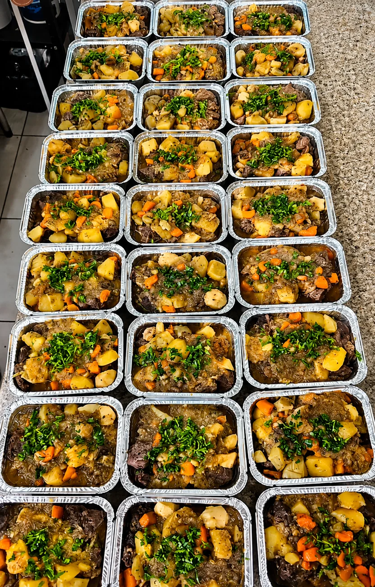
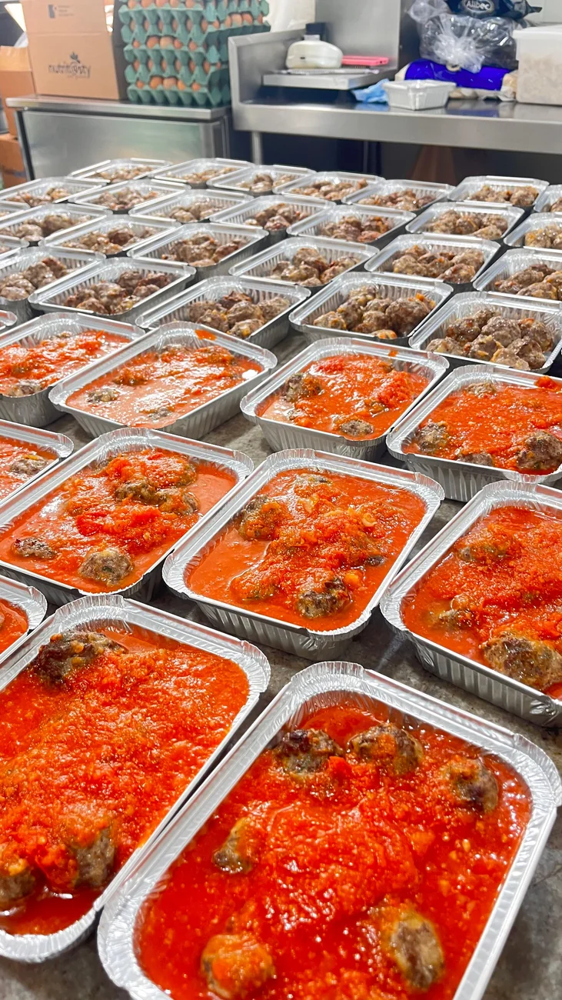

Sopas, lentilha, feijão, cremes orgânicos, lasanha, strogonoff, carne de panela.
Praticidade real para quem quer comer bem sem perder tempo.

Nossos pratos congelados são uma extensão da nossa cozinha — feitos com os mesmos ingredientes orgânicos, o mesmo cuidado de preparo, a mesma certificação. Comida de verdade, só que pronta para quando você precisar.
A diferença está no que está dentro. Sem industrialização. Sem conservantes artificiais. Só comida de verdade, pronta para quando você precisar.

Cada opção fabricada na nossa cozinha — com ingrediente rastreável e zero compromisso com o saudável.
Porto da Lagoa, Florianópolis. Seg a Sáb.